Home
Liturgy
Roman Missal
Order of Mass
1. When the people are gathered, the Priest approaches the altar with the ministers while the Entrance Chant is sung.
When he has arrived at the altar, after making a profound bow with the ministers, the Priest venerates the altar with a kiss and, if appropriate, incenses the cross and the altar. Then, with the ministers, he goes to the chair.
When the Entrance Chant is concluded, the Priest and the faithful, standing, sign themselves with the Sign of the Cross, while the Priest, facing the people, says:
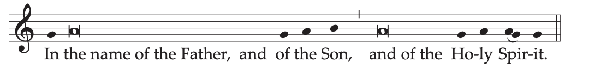
In the name of the Father, and of the Son, and of the Holy Spirit.
The people reply:

2. Then the Priest, extending his hands, greets the people, saying:
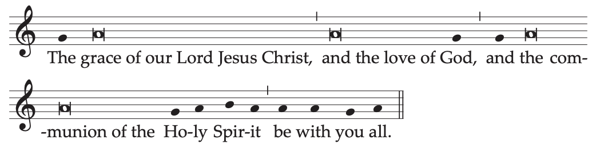
The grace of our Lord Jesus Christ,
and the love of God,
and the communion of the Holy Spirit
be with you all.
Or:
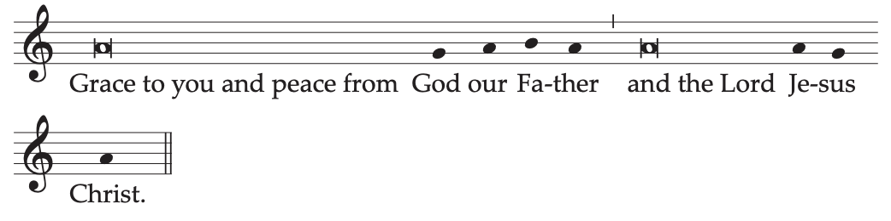
Grace to you and peace from God our Father
and the Lord Jesus Christ.
Or:

The Lord be with you.
The people reply:

In this first greeting a Bishop, instead of The Lord be with you, says:
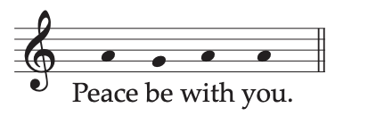
3. The Priest, or a Deacon or another minister, may very briefly introduce the faithful to the Mass of the day
Penitential Act*From time to time on Sundays, especially in Easter Time, instead of the customary Penitential Act, the blessing and sprinkling of water may take place (as in Appendix II, pp. 1453-1456) as a reminder of Baptism.
4. Then follows the Penitential Act, to which the Priest invites the faithful, saying:
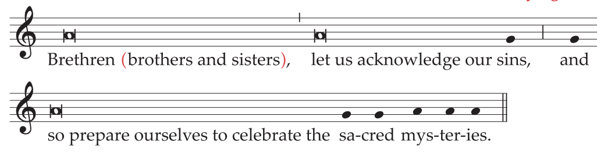
Brethren (brothers and sisters), let us acknowledge our sins,
and so prepare ourselves to celebrate the sacred mysteries.
A brief pause for silence follows. Then all recite together the formula of general confession:
I confess to almighty God
and to you, my brothers and sisters,
that I have greatly sinned,
in my thoughts and in my words,
in what I have done and in what I have failed to do,
And, striking their breast, they say:
through my fault, through my fault,
through my most grievous fault;
Then they continue:
therefore I ask blessed Mary ever-Virgin,
all the Angels and Saints,
and you, my brothers and sisters,
to pray for me to the Lord our God.
The absolution by the Priest follows:
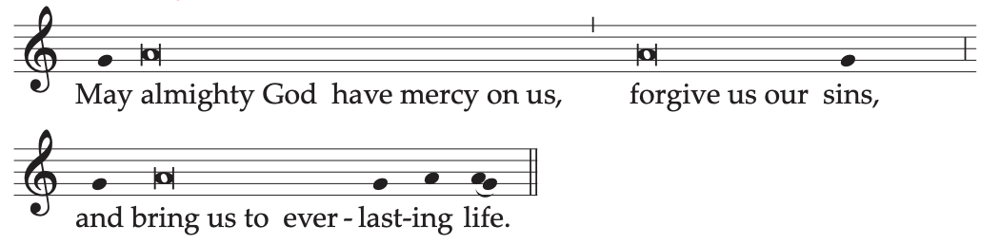
May almighty God have mercy on us,
forgive us our sins,
and bring us to everlasting life.
The people reply:
Amen.
Or:
5. The Priest invites the faithful to make the Penitential Act:
Brethren (brothers and sisters), let us acknowledge our sins,
and so prepare ourselves to celebrate the sacred mysteries.
A brief pause for silence follows.
The Priest then says:
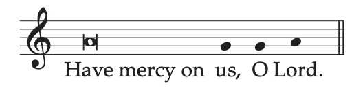
Have mercy on us, O Lord.
The Priest then says:
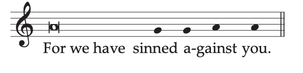
For we have sinned against you.
The Priest then says:
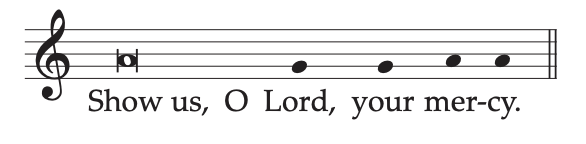
Show us, O Lord, your mercy.
The Priest then says:
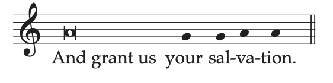
And grant us your salvation.
The absolution by the Priest follows:
May almighty God have mercy on us,
forgive us our sins,
and bring us to everlasting life.
The people reply:
Amen.
Or:
6. The Priest invites the faithful to make the Penitential Act:
Brethren (brothers and sisters), let us acknowledge our sins,
and so prepare ourselves to celebrate the sacred mysteries.
A brief pause for silence follows.
The Priest, or a Deacon or another minister, then says the following or other invocations*Sample invocations are found in Appendix VI, pp. 1474-1480. with Kyrie, eleison (Lord, have mercy):
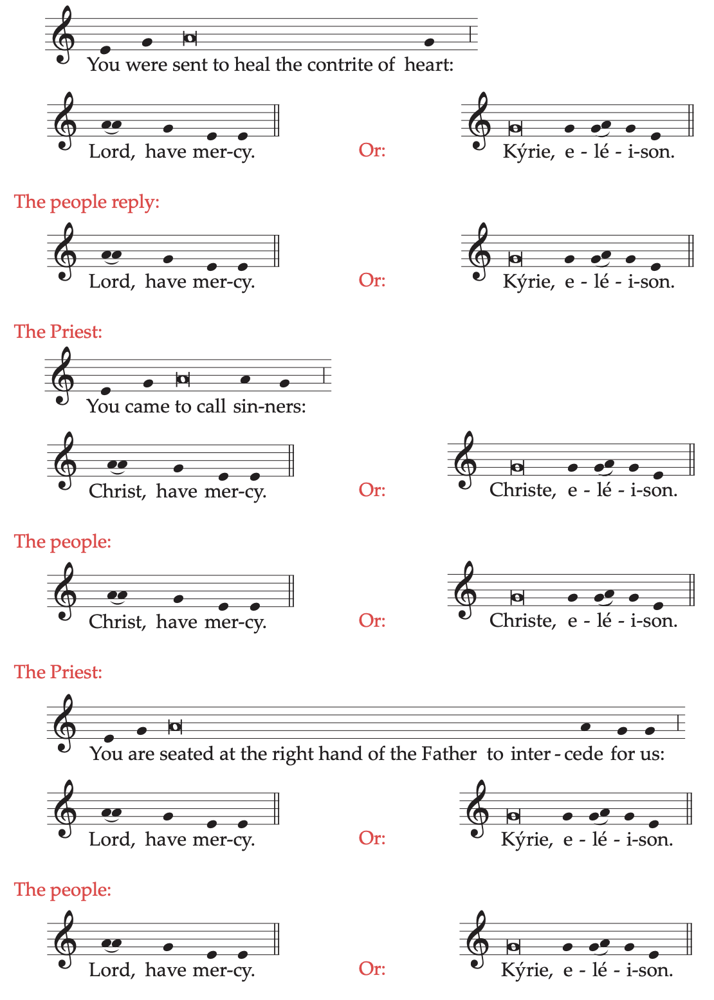
The absolution by the Priest follows:
The people reply:
The Priest, or a Deacon or another minister, then says the following or other invocations*Sample invocations are found in Appendix VI, pp. 1474-1480. with Kyrie, eleison (Lord, have mercy):
You were sent to heal the contrite of heart:
Lord, have mercy. Or: Kyrie, eleison.
The people reply:
Lord, have mercy. Or: Kyrie, eleison.
The Priest:
You came to call sinners:
Christ, have mercy. Or: Christe, eleison.
The people reply:
Christ, have mercy. Or: Christe, eleison.
The Priest:
You are seated at the right hand of the Father to intercede for us:
Lord, have mercy. Or: Kyrie, eleison.
The people reply:
Lord, have mercy. Or: Kyrie, eleison.
The absolution by the Priest follows:
May almighty God have mercy on us,
forgive us our sins,
and bring us to everlasting life.
The people reply:
Amen.
7. The Kyrie, eleison (Lord, have mercy) invocations follow, unless they have just occurred in a formula of the Penitential Act.
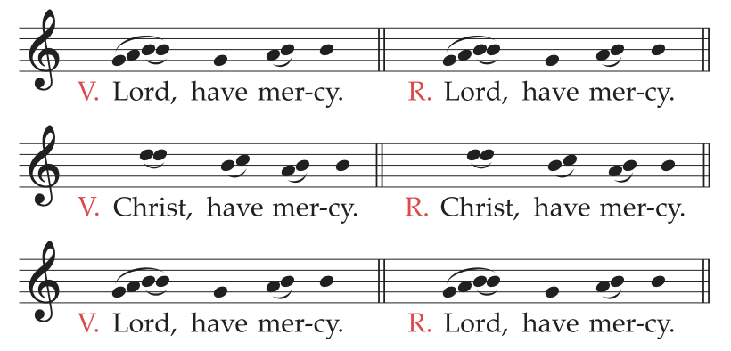
| V. Lord, have mercy. | R. Lord, have mercy. |
| V. Christ, have mercy. | R. Christ, have mercy. |
| V. Lord, have mercy. | R. Lord, have mercy. |
Or:
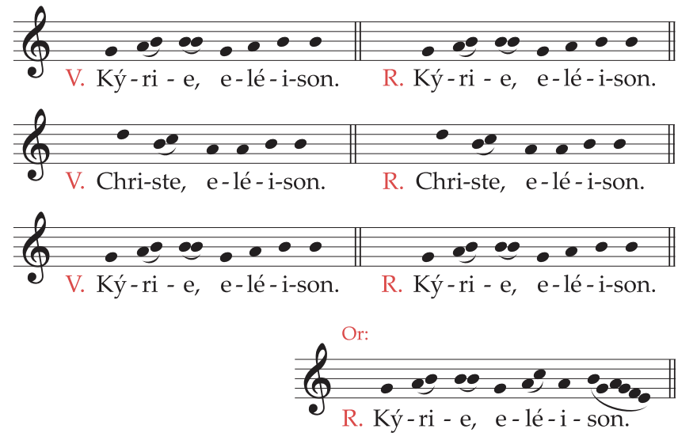
| V. Kyrie, eleison. | R. Kyrie, eleison. |
| V. Christe, eleison. | R. Christe, eleison. |
| V. Kyrie, eleison. | R. Kyrie, eleison. |
8. Then, when it is prescribed, this hymn is either sung or said:
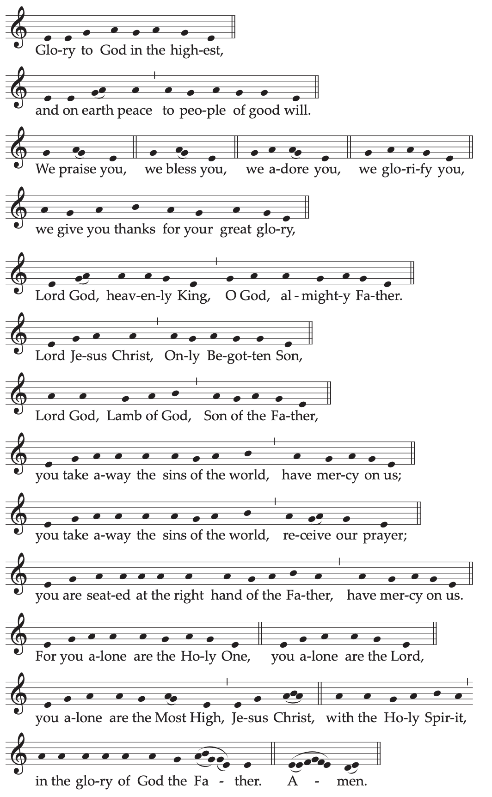
Glory to God in the highest,
and on earth peace to people of good will.
We praise you,
we bless you,
we adore you,
we glorify you,
we give you thanks for your great glory,
Lord God, heavenly King,
O God, almighty Father.
Lord Jesus Christ, Only Begotten Son,
Lord God, Lamb of God, Son of the Father,
you take away the sins of the world,
have mercy on us;
you take away the sins of the world,
receive our prayer;
you are seated at the right hand of the Father,
have mercy on us.
For you alone are the Holy One,
you alone are the Lord,
you alone are the Most High,
Jesus Christ,
with the Holy Spirit,
in the glory of God the Father.
Amen.
9. When this hymn is concluded, the Priest, with hands joined, says:
Let us pray.
And all pray in silence with the Priest for a while.
Then the Priest, with hands extended, says the Collect prayer, at the end of which the people
acclaim:
Amen.